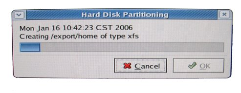
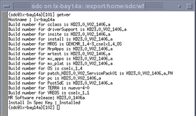
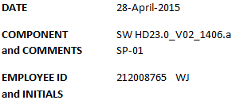

- 00000018WIA30015E20GYZ
- id_131060103.1
- Feb 10, 2023 6:12:23 AM
14.x MR Applications Software Load
Prerequisites
| Required persons | Preliminary requirements | Procedure | Finalization |
|---|---|---|---|
| 1 | Not Applicable | 1.5 hours | Not Applicable |
| Item | Quantity | Effectivity | Part number | Manufacturer |
|---|---|---|---|---|
| Restricted Service DVD (optional) | 1 | - | - | - |
| Service Pack DVD (if needed) | 1 | - | - | - |
| GE Equipment Maintenance sticker | - | - |
5661793 | - |
About this task
IMPORTANT: At the end of the procedure, make sure that the latest Service Pack is loaded. See the latest revision of MR Service Pack Software Matrix, DOC1667089, available from the online documentation library.
If more information is needed for how to load Service Packs, refer to Installing Service Packs.
Disk Partitioning
Procedure
- When the confirmation shown below displays, select Yes.
Figure 1. Autorun Confirmation 
- When the message to turn off power to the DASM (shown below)
displays, do so if one is present.
Figure 2. Turn Off Power to DASM Message 
- Select OK to continue with the software
load when either message below displays. (The system is now partitioning
the hard drives.)
Figure 3. Disk Partitioning Message 
Figure 4. Disk Partitioning Screen for HDx 
SaveInfo and Guided Install Process
Procedure
- Note:Click each tab to verify the correct values were restored. (See illustration below.)
The normal SaveInfo files will be restored later in the software load process.
-
If any parameters do not match the expected criteria, the left column will be red.
-
If everything is acceptable, all values will be black.
-
If a value is changed, it will be noted in blue.
Figure 7. Guided Install - Configuration Screen  Note:
Note:For release 14.x, the proper LPCA configuration must be added to the hardware configuration. To view the different options, click the More Info button to the right of the LPCA Configuration Type.
-
Proceed to the Verification tab shown below. Check the current settings and a pass or fail status, making any necessary changes. (Failed entries are due to missing entries or those with an incorrect format.)Notice - Go to the tab with the error, correct it, then click the Install button to open the Verification tab again.
- If all entries pass verification at this point, click the Install Software button (shown below) to begin the MR Applications load. (The button will not activate if there are any failures.)
Figure 8. Guided Install - Verification Tab 
- Once the MR Applications load is complete and the message shown
below displays, click OK to close this window.
Figure 9. Guided Install - Software Load Complete 
Restore Information
About this task
If performing an Lx to HDx upgrade, RestoreInfo must be done at this time, or options will not be converted to HDx. Option conversion is restricted to the first RestoreInfo. If a restore from the same info is done a second time without a Load from Cold, converted options will be lost.
Procedure
- To perform the RestoreInfo at this time, go to Guided Install,
and choose Save/Restore to display the Save/Restore tab shown below.
- Select Restore Information, and choose the proper media (either MOD or CD/DVD).
- Insert the proper media, and select Restore all files automatically.
Figure 10. Save/Restore Screen  Note:
Note:If restoration fails, the media will automatically eject. Exit the Guided Install and allow the system to reboot. When the system has restarted, return to the Guided Install and attempt to RestoreInfo again.
- A RestoreInfo in Progress window will scroll
filenames as they are restored. When the RestoreInfo is complete and
the message shown below displays with the instructions to run the
update utility, click OK to continue.
Figure 11. Guided Install - Update Utility Message 
- When the Restore Manager menu opens, make
sure the All box is selected to restore all
items, then click the Update button.
Figure 12. Guided Install - Restore Utility 
- When the update is complete, click Quit and Yes. A message similar to the one below
will display with the location of the log file of changes made by
the Restore Manager.
Figure 13. Log File 
New Coil Parameters
About this task
Beginning with Signa 10.x, coil parameters have changed. For upgrades from 8.x or 9.x, a coil update will run to add the new parameters to the existing coil definitions.
Procedure
The success of the update is dependant on recognition of coil names. If no discrepancies are found, continue to Step 2.c. If any coils are not recognized during the update, the error message shown below will display.Notice Figure 14. Coil Config Upgrade Status Message with Unknown Coils Found 
VRE Software Load
Procedure
- Load the VRE software as follows:
- Go into Guided Install and select VRE Configuration to display the VRE Configuration tab shown.
Figure 15. VRE Configuration Tab 
- Click on Configure VRE Blades.
- Verify that the VRE Blades are properly installed and all hardware connections are in place, including Ethernet connections.
- Select the proper number (1, 2 or 4) of ICNs or VRE Blades.
(Choose 1 or 2 when silver 5127452-3 ICNs are installed, and 2 or
4 when black 5127452 ICNs are installed.)Note:
Either black or silver ICNs will be installed. A combination of the two hardware types will not work on the system and should not be present.
-
This procedure will take 15 to 20 minutes to complete depending on the number of ICNs in the system.
-
The screen shown below will display indicating the progress.
Figure 16. VRE Configuration Progress 
-
- Go into Guided Install and select VRE Configuration to display the VRE Configuration tab shown.
Term Server Reset for First/Initial Software Load
Procedure
Remove the power connector from the Term Server.Notice - Connect power to the Term Server while pressing and holding the Reset button (small square button next to the power jack) for about 20 seconds.
- If communication problems are perceived between the Linux PC
and Term Server, ping the Term Server as follows:
- Open a C-shell.
- Type: cd /etc and press Enter.
- Type: more hosts and press Enter.
- Ping the TS1 address by typing: ping x.x.x.7 and press Enter.Note:
Proper communication should be evident. The x.x.x. is the TPS Subnet address. The Term Server may need to be reset several times in order to establish communication with the Linux PC.
- To stop the test, type: ^z.
- Exit the Guided Install screen by selecting File, then Quit.
Install System Options, Service Software and InSite
Procedure
- Insert the Restricted or Advanced service software DVD and click OK. The message shown below will display while the software
is loading, which will take about three (3) minutes.
Figure 17. Configure InSite Menu 
Perform SaveInfo and Load Service Documents
Procedure
Set Up MOD CD-ROM Devices
Procedure
- Select Display MOD/CD-ROM from the Guided Install.
- When the MOD/CD-ROM tab displays, click Setup Devices and follow the outlined tasks. (The message, Device configured, displays once configuration is completed for each device.)
Loading Service Packs
Procedure
Finalization
Procedure
- IMPORTANT: Make sure that the latest Service Pack is loaded. See the latest revision of MR Service Pack Software Matrix, DOC1667089, available from the online documentation library.
- If more information is needed for how to load Service Packs, refer to Installing Service Packs.
- Record software revision and service pack (if applicable):
- Obtain the GE Equipment Maintenance sticker (part number 5661793).
- Open up a C-shell, type getver and click enter. An example is shown below.
Figure 20. Result Window 
- Record the software revision and service pack on the sticker,
along with the date, Employee ID and initials and place the sticker
on the GOC.
Figure 21. Sample Sticker 
- Perform a Daily Automated Quality Assurance (DAQA) scan to verify system integrity. Instructions can be found in the system Operator Manual.
- If applicable, verify the system can network to other systems by transferring images.
- If applicable, verify the system can properly film.